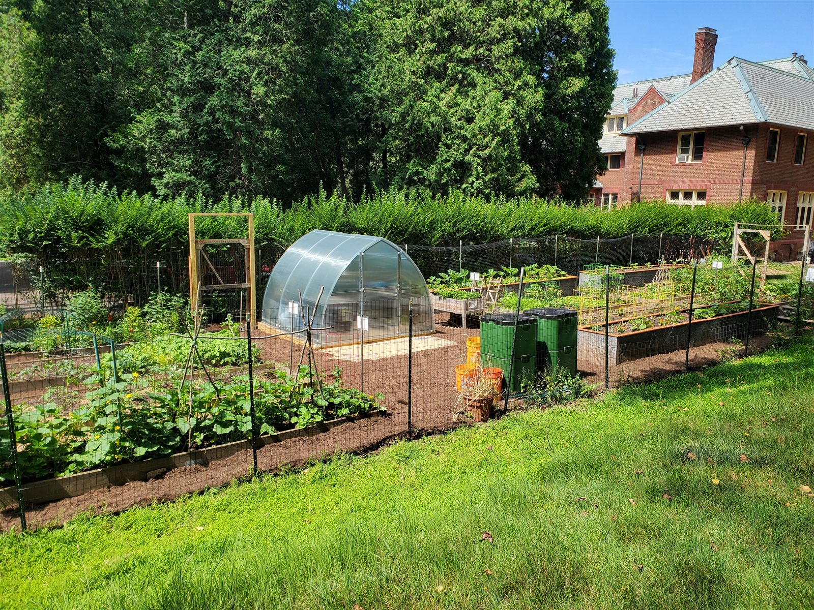

Garden of Hope

Garden of Hope was my Eagle Scout service project at St. Marguerite's Retreat House. I planned and led multiple volunteer work teams through greenhouse framing, compost bin construction, bed preparation, hedge trimming, and grounds restoration around the retreat house.
The project was less about the carpentry and more about the coordination: recruiting volunteers, sequencing the work across multiple weekends, keeping teams supplied and safe, and delivering a finished space the Community of St. John Baptist could actually use. The Sisters featured the project in their March 2022 newsletter.
It's where I learned the leadership fundamentals I still use — perseverance, responsibility, and leading by example. Directing volunteer teams through physical work and directing AI agents through digital work have more in common than you'd think: clear direction, honest review, and follow-through.